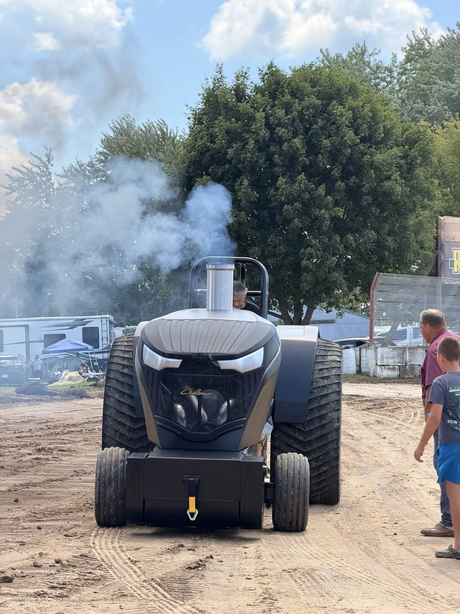

The Idea
It started in 2014, in Tomah, Wisconsin, with one idea.

Chris had spent more than 20 years in tractor pulling, and his whole life loving heavy metal. The loud, heavy, unapologetic kind of music you feel in your chest before you hear it. So when he decided to build his own pulling tractor, the name was never up for debate: Heavy Metal Pro Stock. A machine that would sound the way that music feels, and hit the track just as hard.
That idea became a Pro Stock tractor. And that tractor became “The Evil One”.
Twelve Years in the Making

“The Evil One” wasn't built overnight. The idea was born in 2014. The first bolt went in at the family shop in Waterloo, Wisconsin, in February 2020. And it took until 2026 to hear it run.
Twelve years of planning, building and rebuilding. Twelve years of parts, late nights in the shop and a vision that never went away. When almost everything on a tractor is built by hand, nothing about it is quick. And nothing about it is easy to give up on, either.
The Night the Lights Went Out
In 2026, the moment finally came. Chris was in the shop at home, ready to hear the engine come to life for the very first time.
He turned it over. And at that exact moment, lightning struck and the power went out.
Some would call it a coincidence. We call it a sign. From that night on, there was no doubt about what we had built.
“This thing is f#ck!ng evil.”
A Rough Start
The first pull, in August 2026, was supposed to be the big moment. It didn't go the way we wanted.

A small, unexpected issue came up, and we didn't finish the run. After everything that went into this tractor, it was a hard day. We won't sugarcoat it.
But that day also became one of our proudest. Getting a tractor we built with our own hands onto a real track was already a win. The pull didn't finish that day. The story was just getting started.
Built by Family

“The Evil One” calls Waterloo, Wisconsin home.
Behind the tractor is a family that has believed in it since the very first day. Every hour in the shop, every road trip to a pull, every part fixed and fixed again happened because the whole family decided to make this thing live.

This isn't a company project, and it isn't a showpiece. It's a family's tractor, built in a home shop and taken to the track because we love this sport.
The Driver

Chris is the owner, the builder behind the idea and the one in the seat.
He has been pulling for more than 20 years. Two decades on the track, and every one of them poured into this tractor: he dreamed it up, built it and now drives it.
He's the heavy metal fan who gave it its name, the one who fired it up the night the lightning hit, and the one behind the wheel at every pull.
What Makes It Different
On a Pro Stock track you'll see plenty of powerful tractors. What sets “The Evil One” apart is under the hood.

It runs a Caterpillar 3208 V8, reverse flow: a setup you won't find on any other tractor on the track. It gives “The Evil One” its own personality and its own sound.
From the factory, the 3208 measures 636 cubic inches. Ours doesn't. We built it out to 680.
And the engine is only the beginning. Ask us what's custom-built on this tractor and the answer is simple: everything.
Proudest Moments
The first pull. It didn't end the way we wanted, but seeing the tractor we built at home on a real track is something we'll never forget.
A great dyno session. The day the numbers confirmed what we already felt: all the work was paying off.
Best results: still being written. “The Evil One” is just getting started.
The Season

“The Evil One” is built to compete. Every time it hits the track, it's there to pull.
We expect around 20 competitions a season on the NTPA and PPL Badger State circuits. That's where you'll find us. Follow us on Facebook and Instagram to know where we'll be next.
Sponsor “The Evil One”

Every pull draws thousands of fans. Across 20+ competitions a season, that's 100,000+ people (est.) watching “The Evil One”, and the names on it.
We're looking for our first sponsors. The brands that join now won't be one more logo: they'll be part of the story from the very beginning.
Your brand can ride on the tractor, the trailer and the team shirts, and show up on our website, our social media, our merch and in announcer mentions at every pull.
If your business wants to be in front of pulling fans across Wisconsin and the NTPA circuit, backed by a driver with 20+ years on the track, we want to talk to you. Sponsor “The Evil One”